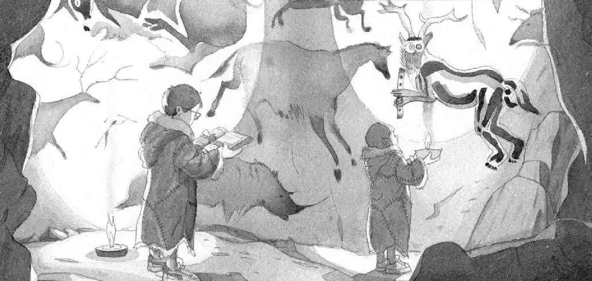

“Wow, what is this place?” said Jack.
“Maybe it’s an art gallery,” said Annie.
“I don’t think so,” said Jack. “It’s too hard to get to.”
He read about the cave paintings:
These Ice Age beasts were painted 25,000 years ago. Cro-Magnons painted pictures of animals they hunted. They may have believed the paintings would give them power over the animals.
“Wow, look at this,” said Annie.
She pointed at a painting farther down the wall.
It showed a figure with human arms and legs, reindeer antlers, and an owl face. It seemed to be holding a flute.

Jack looked at the book again. He found a picture of the figure and read:
Cave men may have been led by a sorcerer, or “Master of the Animals.” He may have worn reindeer antlers so he could run like a reindeer—and an owl mask so he could see like an owl.
“What is it?” said Annie.
“The Master of the Animals,” said Jack. “He’s a sorcerer.”
“Oh wow,” breathed Annie. “That’s it.”
“That’s what?”
“That’s who we have to find.”
“Why?”
“Maybe he’s a friend of Morgan’s,” said Annie.
Jack nodded slowly. “Maybe,” he said.
“Let’s go find him,” said Annie.
They went back through the tunnel into the first cave.
“We better put our lamps back,” said Jack.
He and Annie blew out their lamps.
They placed them back by the fire.
Jack’s backpack was on the floor next to the skins. He put the Ice Age book into it.
“How’s Peanut?” said Annie.
Jack looked into his pack. “She’s not here,” he said.
“Oh no!” cried Annie. “She must have crawled out when we were looking at the paintings.”
“Peanut!” Jack called.
“Peanut!” called Annie.
Annie walked slowly around the cave, looking into the shadows.
Jack peered around the fire and under each of the furry skins.
“Jack! Come here!” said Annie.
She was standing near the entrance to the cave.
The snow had stopped falling.
In the snow were tiny tracks.